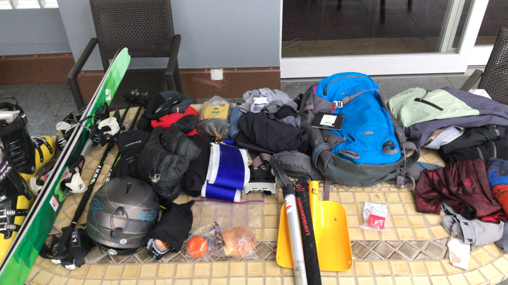

Ski-tour equipment list
This equipment list is intended as a starting point for planning a ski tour. Adapt it to the weather, terrain, and trip plan.

- Touring skis with PIN bindings
- Compatible ski touring boots
- Climbing skins
- Ski touring poles - retractable
- Ski crampons (if risk of icy conditions)
- Avalanche safety kit (if avalanche risk)
- Transceiver (beacon)
- Probe
- Shovel
- Backpack - around 32l
- Helmet
- Goggles
- Layered clothing
- Layered gloves system
- Storm layer (eg. Goretex)
- Sunglasses (alpine certified if in high-altitude)
- Baseball cap / sun protection
- Face Tube (optional)
- Tour snacks / lunch
- First Aid (incl. blister pads, bandaids, pain relief)
- Identification cards, Cash, Credit / Debit Cards
- Camera (optional)